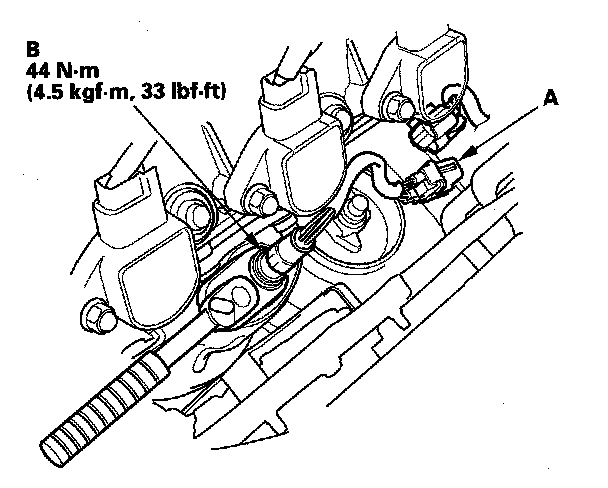
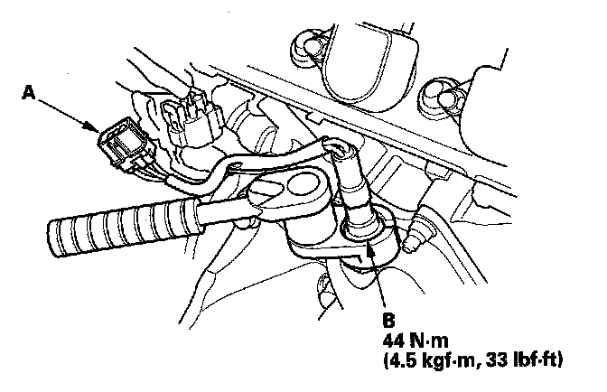

A/F Sensor
A/F Sensor ReplacementSpecial Tools Required
O2 sensor socket wrench, Snap-on YA8875, SP Tools 93750, or equivalent, commercially available
Front Bank (Bank 2)

1. Disconnect the front A/F sensor 6P connector (A), then remove the A/F sensor (B).
2. Install the parts in the reverse order of removal.
Rear Bank (Bank 1)

1. Disconnect the rear A/F sensor 6P connector (A), then remove the rear A/F sensor (B).
2. Install the parts in the reverse order of removal.